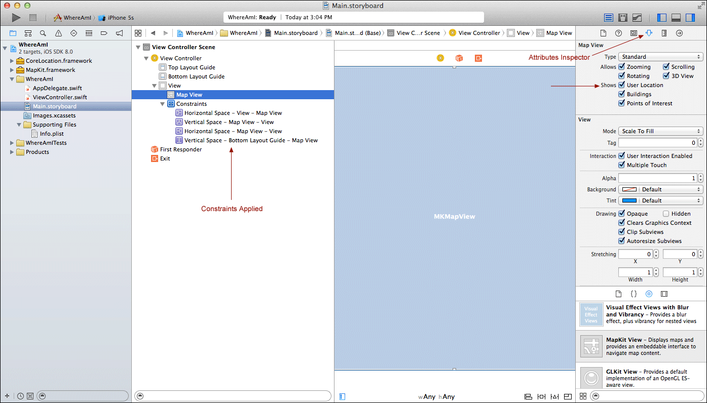
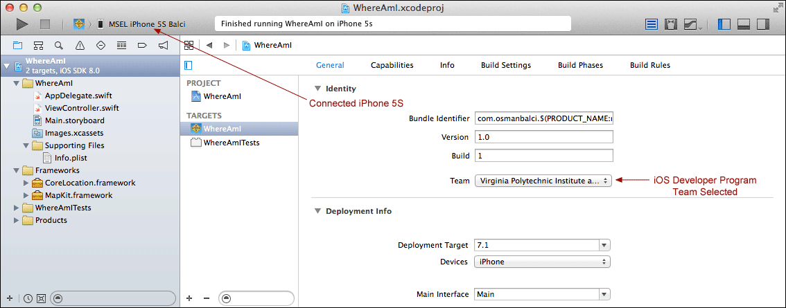

Learning Objectives
Table of Contents
Step 0: Earlier Phases of the Software Life Cycle
We assume that earlier phases of the Software Life Cycle have been completed. See Dr. Balci's Software Life Cycle. The life cycle processes Problem Formulation, Requirements Engineering, Architecting, and Design are assumed to be completed. In this tutorial, we focus on the Programming process.
Step 1: Application Functionality Specification
Requirements:
- The app shall be built to run on iPhone and iPod Touch.
- Upon launch, the app shall display the current location of the user on a map.
- All device orientations shall be supported except upside-down.
- The map shall be displayed both in portrait and landscape orientations.
- User's permission shall be obtained before displaying his/her current location.
- The user shall manipulate the map with the options listed below.
To zoom in:
- Pinch open the map with two fingers or
- Double-tap with one finger (or double click)
To zoom out:
- Pinch close the map with two fingers or
- Tap with two fingers (or Option-click)
To pan or scroll to another part of the map:
- Drag up, down, left, or right with one finger
Step 2: Creation of a New Project
- Launch Xcode. Create a new project by selecting File → New → Project... (The three dots after a menu item, referred to as ellipsis, imply that additional options will be presented to the user after the selection of the menu item.)
- Select iOS → Application → Single View Application template. Click Next.
- In the Choose options for your new project dialog, as shown in the following screenshot,
- Enter Product Name as WhereAmI. Note that the product name is your app name displayed under the app icon on the home screen of the iOS device. Therefore, it should be selected short enough to fit into the available space so that it is not truncated. The app name can have spaces such as Google Maps.
- Enter Your Name as Organization Name
- Enter com.yourname as your company/organization unique identifier. Note that domain names, e.g., apple.com, ibm.com, microsoft.com, are unique.
- The string com.yourname.hereAmI becomes the Bundle ID for your application uniquely identifying it in the App Store for distribution.
- Select Swift as the programming language to use. Swift requires iOS version 7.0 or higher.
- Select iPhone for the Devices, implying that your app will run on those iPhone and iPod Touch mobile devices that can run iOS 7.0 or higher. Note that some old iOS devices cannot be upgraded to version 7.0.
- Click Next. In the File Browser window displayed,
- Select a location on your hard disk to store your project.
- Uncheck Source Control to disable version control. Click Create to create your project.
Step 3: Setting General Project Attributes
Set the following project attributes under the General tab as shown in the following screenshot:
- Click the project name WhereAmI in the project navigator to display the General project settings.
- Click the Team pop-up menu and select your iOS Developer Program account name from the list displayed. If you have not added your iOS Developer Program account, select Add an Account...
Step 4: Application Icons and Launch Images
- Download the WhereAmI_files.zip file.
- Uncompress it.
- Click Images.xcassets in the project navigator as shown below to display the Image Assets Pane.
- Drag and drop the dowloaded folders App Icons and Launch Images into the Image Assets Pane as shown below.
- Images dragged and dropped in the Image Assets Pane are stored in the Media Library.
Setting the App Icons
- Click AppIcon in the Image Assets Pane as shown in the following screenshot.
- Select only the iOS 7.0 and Later Sizes option in the Attributes Inspector on the top right corner of the window as shown below.
- Click the Media Library icon in the Library Selector Bar to show all of the image assets for the project.
- Drag each app icon and drop it in its corresponding placeholder as shown in the following screenshot.
- You can inspect the size, filename, and other attributes of a selected app icon using the Attributes Inspector as depicted in the screenshot below.
Setting the Launch Images
- Click LaunchImage in the Image Assets Pane.
- Select only the iOS 7.0 and Later option in the Attributes Inspector on the top right corner of the window.
- Click the Media Library icon in the Library Selector Bar to show all of the image assets for the project.
- Drag each launch image and drop it on its corresponding placeholder.
Step 5: iOS Layers, Frameworks, and Classes
“Apple delivers most of its system interfaces in special packages called Framework. A Framework is a directory that contains a dynamic shared library and the resources (such as header files, images, helper applications, and so on) needed to support that library. To use frameworks, you link them into your application project just as you would any other shared library. Linking them to your project gives you access to the features of the framework and also lets the development tools know where to find the header files and other framework resources.” [Apple]
The iOS programming is abstracted in four Layers as depicted in the following figure. Each Layer contains a number of Frameworks as shown below. Each Framework contains a number of Classes. Each Class contains a number of Methods (Functions).
We need to display a map and determine the user's current location in our application; therefore, we need to import the MapKit and CoreLocation frameworks as shown in the following screenshot.
Clicking a Class Reference describes the class and provides documentations for all of the methods (functions) available in that class.
In summary: A Layer contains frameworks; A Framework contains classes. A Class contains methods/functions.
We need to link the MapKit and CoreLocation frameworks to be able to display a map and determine the user's current location in our application.
To link the MapKit and CoreLocation frameworks to your project so that its classes are made available and linked to your application:
- In Xcode Project Navigator, click WhereAmI on the top, and click General tab.
- Scroll down to reveal Linked Frameworks and Libraries and expand it as shown in the following screenshot.
- Click the + button under the Linked Frameworks and Libraries as shown below.
In the Choose frameworks and libraries to add dialog, scroll down and click CoreLocation.framework to select it and Command-click the MapKit.framework to also select it. Click Add to link them.
The MapKit framework is linked to your project as shown in the following screenshot.
The Xcode Project Navigator enables you to organize your project files by using Groups. A Group does not necessarily map to a folder on your hard disk. It is provided for organizing your files.
- Right click the project name WhereAmI on top of the project navigator.
- Select New Group from the displayed menu.
- Name your new group Frameworks.
- Move the linked framework files into the newly created Frameworks group.
Step 7: User Interface Development
The Interface Builder (IB) is used to create your application's User Interface (UI). It enables you to drag and drop UI objects from the Object Library and graphically connect some UI objects to instance variables and instance methods specified in your code. We use the .storyboard file to use the IB to create the UI.
What is a Storyboard? Dictionary definitions:
- “a panel or panels on which a sequence of sketches depict the significant changes of action and scene in a planned film, as for a movie, television show, or advertisement.”
- “a series of sketches or photographs showing the sequence of shots or images planned for a film”
We use the term Storyboard to refer to an iOS file containing
- an iOS app's navigation structure or logical flow (with horizontal and vertical decomposition of app's functionality),
- definitions of the views making up the iOS app's UI,
- connection of a UI object to code for performing an action or defining an outlet,
- specification of a relationship between two views, and
- how a view will segue into the next one.
Click the Main.storyboard file in the Project Navigator to display your app's only scene (view) as shown in the screenshot below.
- Show the Utility area. Select Object Library from the Library Selector Bar.
- Select the View object in the document outline pane.
- Drag a MapKit View object from the Object Library and drop it on top of the selected View object as shown in the following screenshot. This action corresponds to instantiation of a new object at design time.
- While the newly instantiated Map View object is selected, click the Pin tool to pop up its menu as shown in the following screenshot.
- Set the constraints as shown below so that the map scales and positions itself to fill the entire screen in portrait and landscape device orientations for all screen sizes.
Set the Map View object to show the user's current location upon its first display.
- While the Map View object is selected, click the Attributes Inspector on the Inspector Selector Bar as shown in the following screenshot.
- Check the box for Shows User Location, as shown below.

Step 8: Obtaining User's Authorization
Recently, some apps have been developed to monitor the user's geo-location while the app is inactive or running in the background without the knowledge of the user. Many users do not frequently terminate their apps and don't even know that their apps continue to run in the background unless they are terminated. These app developers have been collecting geo-location information of the users and selling the collected data without the knowledge of the user. This has certainly created a serious privacy violation. Therefore, Apple has changed the way authorization is requested from the user in iOS 8.
Now, as app developers, we must ask for user's permission to monitor his/her geo-location clearly in two different manners:
Option 1: requestWhenInUseAuthorization
- (a) Ask your locationManager to request user's authorization while the app is being used.
- (b) Add a new row in the Info.plist file for NSLocationWhenInUseUsageDescription, for which you specify, e.g., "WhereAmI requires monitoring your location only when you are using the app!"
Option 2: requestAlwaysAuthorization
- (a) Ask your locationManager to request user's authorization even when the app is not being used.
- (b) Add a new row in the Info.plist file for NSLocationAlwaysUsageDescription, for which you specify, e.g., "WhereAmI requires monitoring your location even when you are not using your app!"
You select and use only one of these two options depending on your app's requirement.
App Delegate Class File
Copy and paste the documented code given below. Carefully study the code, understand what it is doing, and learn from it!
The AppDelegate.swift file:
//
// AppDelegate.swift
// WhereAmI
//
// Created by Osman Balci on 8/28/14.
// Copyright (c) 2014 Osman Balci. All rights reserved.
//
import UIKit
import MapKit
import CoreLocation
@UIApplicationMain
class AppDelegate: UIResponder, UIApplicationDelegate {
var window: UIWindow?
/*
Instantiate an object from (or create an instance of) the CLLocationManager class and store the
object reference (unique ID) of the newly created object into the instance variable called locationManager.
You can use the created location manager object to retrieve the most recent location of the user.
*/
var locationManager = CLLocationManager()
func application(application: UIApplication!, didFinishLaunchingWithOptions launchOptions: NSDictionary!) -> Bool {
/*
Monitoring the user's current location is a serious privacy issue!
You are required to get the user's permission in two ways:
(1) requestWhenInUseAuthorization:
(a) Ask your locationManager to request user's authorization while the app is being used.
(b) Add a new row in the Info.plist file for NSLocationWhenInUseUsageDescription, for which you specify, e.g.,
"WhereAmI requires monitoring your location only when you are using the app!"
(2) requestAlwaysAuthorization:
(a) Ask your locationManager to request user's authorization even when the app is not being used.
(b) Add a new row in the Info.plist file for NSLocationAlwaysUsageDescription, for which you specify, e.g.,
"WhereAmI requires monitoring your location even when you are not using your app!"
You select and use only one of these two options depending on your app's requirement.
*/
// Option 1: Request user's authorization while the app is being used.
self.locationManager.requestWhenInUseAuthorization()
// Option 2: Request user's authorization even when the app is not being used.
// self.locationManager.requestAlwaysAuthorization()
return true
}
}
Info.plist File
- Click the Info.plist file in the Supporting Files group in the project navigator to open it as shown in the following screenshot. Or you can double click it to open it in its own window.
- Right click anywhere on the empty space on the bottom and select Add Row.
- Add the row as shown in the following screenshot.
- Save the plist file.
Step 9: Running the App under the iOS Simulator
- Make sure that all of your files are saved.
- Click the device selection pop-up menu for the iOS Simulator on the top left corner of the Xcode window and select iPhone 5S.
- Click the Run button on the top left corner of the Xcode window to execute your app under the iOS Simulator.
- Under the iOS Simulator, select Hardware → Rotate Left or Rotate Right or press Command-Left Arrow or Command-Right Arrow repeatedly to see the map under different device orientations and screen sizes.
Your laptop or desktop computer does not have the GPS antenna to find out your current location. For purposes of testing your location-aware app, you can set a default location for the iOS Simulator to use. Under the iOS Simulator, select Debug → Location → Custom Location... Enter latitude and longitude of the location you want to test for. For Blacksburg, you can use: Latitude: 37.228733 and Longitude: -80.419246.
Upon launch of the WhereAmI app, first the app asks for user's permission to use location information and then shows the user's current location as the default location as set in the Simulator. By zooming in, the location is shown in more detail.
To truly test your location-aware apps, you must test them on iOS devices.
You can view the map in all screen orientations except Upside Down as we specified it. In the iOS Simulator, select Hardware → Rotate Left to view the map in landscape left orientation. You can toggle between device orientations by Command-Left Arrow or Command-Right Arrow.
The following screenshots are taken after the app is deployed to an iPhone 5S.
Step 10: Running the App on iPhone or iPod Touch
- Register the iOS device in your iOS Developer Program under the Devices section. Click the + button to add a device. Assign a name to your device and copy and paste the unique identifier UDID of the device.
- Under the Provisioning Profiles section, click Development.
- Edit your existing Provisioning Profile in your iOS Developer Program and include the iOS device just registered.
- After you add the test device to your Provisioning Profile, click Generate to generate a new Provisioning Profile. You need to do this every time you want to use a new test device.
- Download the newly generated Provisioning Profile and double click it to install it into Xcode.
- Connect the device to your computer, e.g., iMac or MacBook Pro. The screenshot below shows MSEL iPhone 5S Balci device as connected.
- Click the Run button to deploy and run the app on the connected iOS device.

Upon installing your app on your device, it is automatically launched to show you the map with a blue circle. Double-tap the blue circle repeatedly or near it to zoom in. You should see your current location correctly as marked by the blue circle. If you click the blue circle, the Current Location annotation is displayed.